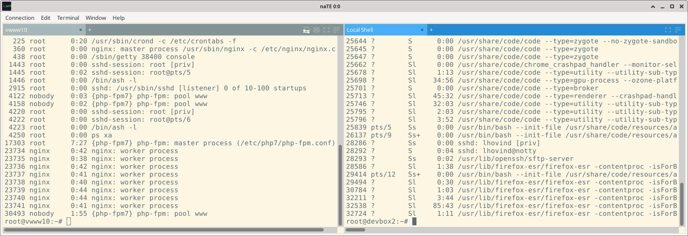
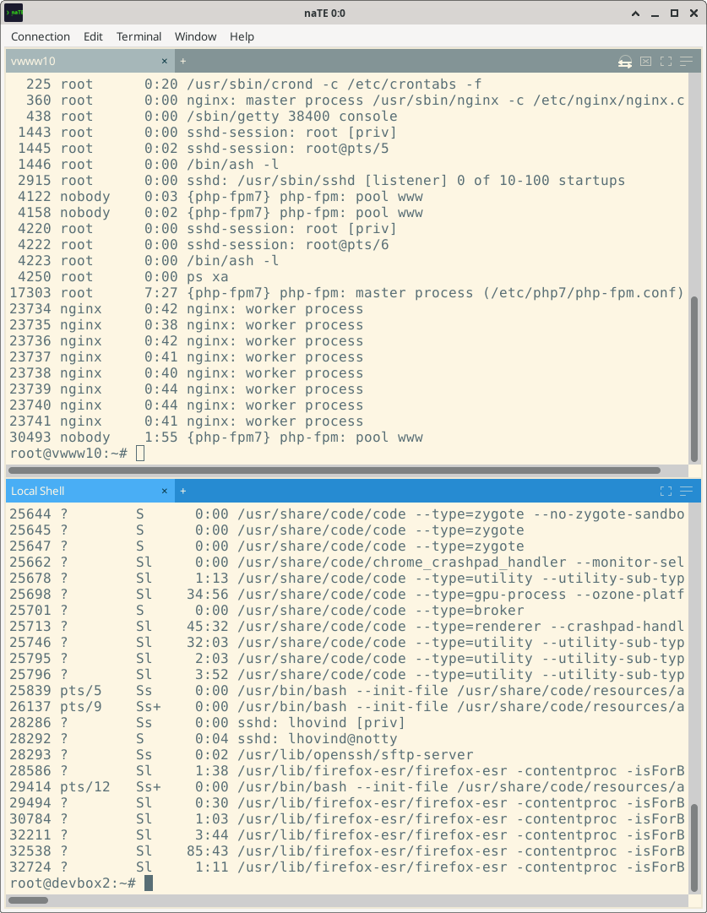
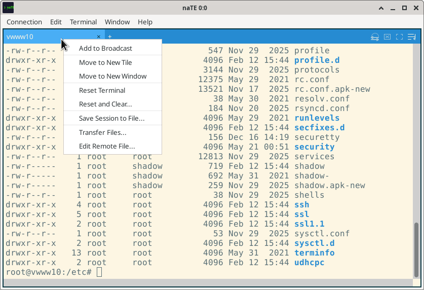
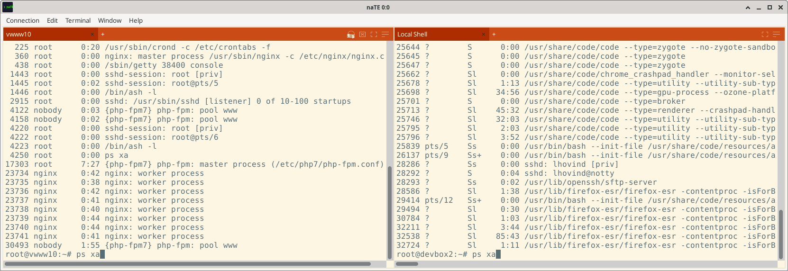
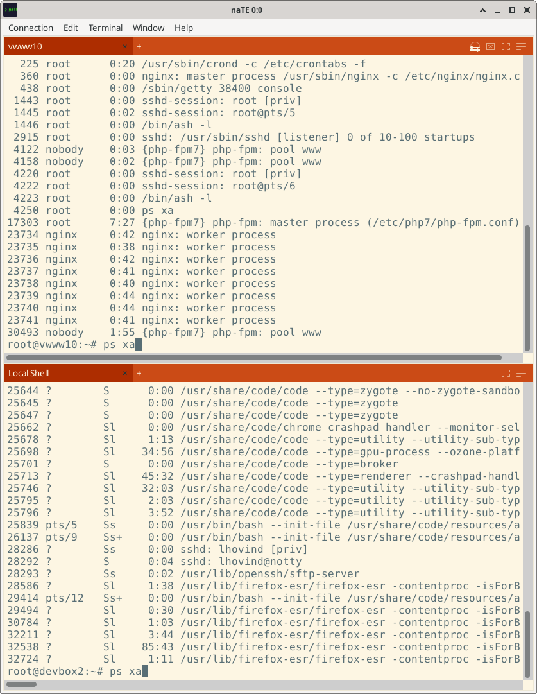
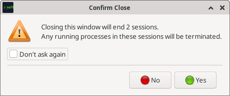

Sessions & Workspaces
Tiling layouts, tab management, session restore, workspaces, and broadcast mode.
Tiling Layout
A naTE window contains one or more tiles arranged in a grid. Each tile has its own tab strip and holds one or more sessions. You can have as many tiles as you want — naTE will redistribute them into the grid automatically.
Tile layout direction
Two layout modes control how new tiles are inserted:
- Row First — fills a row before adding a new row. Produces a balanced grid.
- Column First — fills a column before adding a new column.
Change the mode for the active window via Window → Tile Layout. Set a global default in Edit → Preferences → Appearance.


Creating tiles
- Open a new connection with Open in → New Tile in the New Connection dialog.
- Move an existing session to its own tile: Terminal → Move to New Tile.
- Drag a tab and drop it onto a blank area of another tile's header to move it there.
Tabs
Each session lives in a tab inside a tile. You can have many tabs per tile.
Adding tabs
- Click the + button in the tile title bar.
- Use Connection → New Connection in Tab to open a new connection dialog pre-set to "Active tile".
Reordering and moving tabs
- Reorder within a tile: Drag a tab left or right in the tab strip.
- Move to another tile in the same window: Drag the tab and drop it on a different tile's tab strip.
- Move to a different window: Drag the tab and drop it onto a tab strip in another naTE window.
- Move an entire tile: Drag the blank area in the tile's title bar (to the right of the + button) and drop it on another window to move all sessions from that tile at once.
Tab context menu
Right-click any tab to get a context menu with actions for that session:

| Item | Description |
|---|---|
| Add to Broadcast | Include this session in broadcast mode so keystrokes are sent to it simultaneously with other broadcast sessions |
| Move to New Tile | Pull this session out into its own tile within the same window |
| Move to New Window | Move this session to a new separate naTE window |
| Reset Terminal | Reset ANSI modes and attributes without clearing content |
| Reset and Clear… | Reset modes and erase all scrollback (offers to save first) |
| Save Session to File… | Export the full scrollback buffer to a text file |
| Transfer Files… | Open the unified file transfer dialog to upload to or download from the remote host (SSH sessions only) |
| Edit Remote File… | Browse, download, and auto-reupload a remote file in your local editor (SSH sessions only) |
Moving sessions between windows
Use Move to New Window from the tab context menu (or Terminal → Move to New Window) to pull a session into its own window. Merge it back by dragging its tab into the destination window.
Tab status indicators
Each tab shows a small status dot:
- No dot — connected
- Orange dot — disconnected (reconnect bar visible in the terminal)
- Pulsing dot — reconnecting
- Highlighted tab — has unread output since you last viewed it
Window Menu Session List
The Window menu maintains a live list of all open sessions, grouped by window and tile. Click any session name to bring it to the front. This makes it easy to jump to a specific session when you have many open.
Session Restore
naTE auto-saves a snapshot of all open sessions and their layout at a regular interval. On launch, it can restore exactly where you left off.
Enabling auto-restore
- Open Edit → Preferences → Session.
- Check Auto-restore sessions on launch.
- Set Auto-save interval (in seconds; default 300; 0 disables auto-save).
What gets restored
- Window count and positions
- Tile layout within each window
- All connection profiles (SSH, PTY, Serial)
- Tab order within each tile
- Last known working directory (for SSH sessions that emit OSC 7)
Note: Session content (scrollback buffer) is not restored — only the connection parameters and layout. Sessions reconnect from scratch, landing in the last known CWD.
Multiple windows
naTE saves each window's state independently. If you have two windows open, both are restored on next launch.
Named Workspaces
Auto-restore always restores the last state. Named workspaces let you save and recall specific layouts by name — useful for switching between projects.
Saving a workspace
- Set up your windows, tiles, and sessions exactly how you want them.
- Open Connection → Save Workspace As…
- Type a name (e.g. production-monitoring) and click Save.
Restoring a workspace
Open Connection → Open Workspace and select the saved workspace. naTE will restore the saved layout, opening new connections as needed.
Tip: You can have multiple workspaces for different projects and switch between them without losing the connections for either. Each workspace is an independent snapshot.
Workspace Manager
Open Connection → Workspace Manager to see all saved workspaces. From here you can rename or delete workspaces.
Reconnecting After a Drop
When an SSH or Serial connection drops unexpectedly, naTE shows a Reconnect bar at the bottom of the terminal instead of closing the tab.
The bar shows the disconnect reason and offers three actions:
- Reconnect — re-establish the connection using the same profile and land in the last known CWD. Authentication happens automatically if agent or key auth is configured.
- Save scrollback — write the full scrollback buffer to a file before the session is gone.
- Close — close the tab.
Tip: The orange dot on the tab and the title bar change color when a session is disconnected, so you can spot dropped sessions at a glance even when that tab is not focused.
Broadcast Mode
Broadcast mode sends every keystroke simultaneously to all sessions that have it enabled. It's useful for applying the same command to a fleet of servers at once.
Enabling broadcast
- Toggle broadcast for the active session via Connection → Broadcast Mode.
- You can also Ctrl+right-click in the terminal canvas.
Visual feedback
- Sessions in broadcast mode show a distinct tab color.
- Tiles that are not receiving broadcast show a dimmed title bar, so you can tell at a glance which sessions are and aren't affected.


Caution: Broadcast sends keystrokes to every enabled session literally. Make sure all target sessions are in a safe state (e.g. at a shell prompt) before typing commands.
Confirm Close
When you close a window with active sessions, naTE shows a confirmation dialog. This prevents accidentally killing long-running remote processes.

- The dialog is auto-suppressed when there is only a single session open (quick close for the common case).
- Check Don't ask again in the dialog to disable it permanently.
- Re-enable it any time from Edit → Preferences → Behavior → Confirm close window.